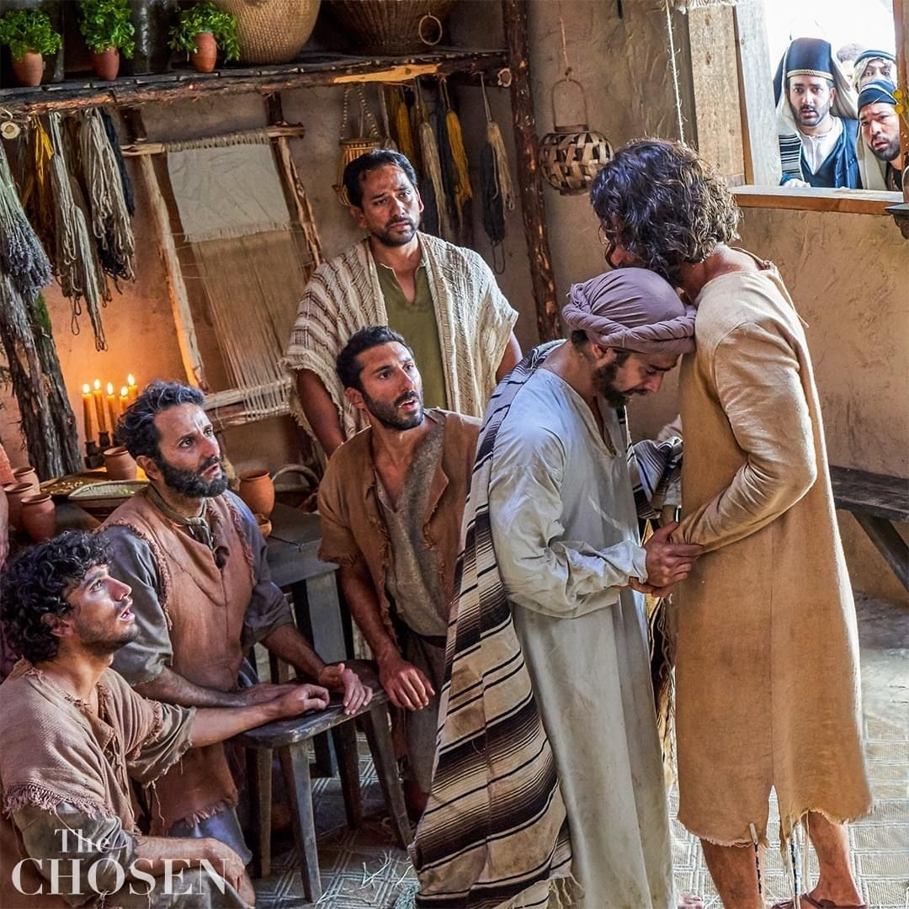
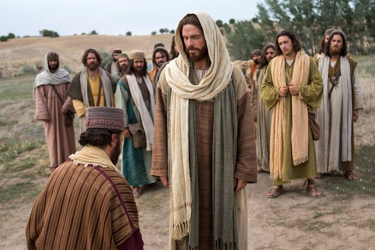
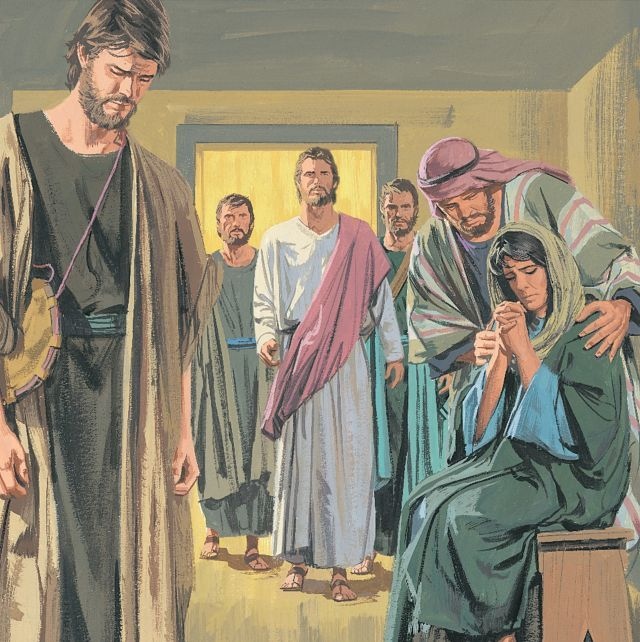
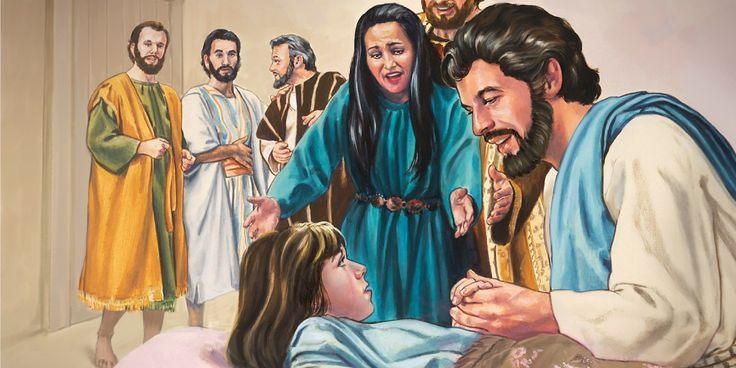

Jesus Raises the Dead to Life by His Divine Power
Jesus faced temptation but never sinned. He remained faithful to God’s will and won the battle. Because He conquered, we too can overcome. Let us follow His example — trusting God completely, even in the wilderness of life.
Jesus, the Resurrection and the Life
Jesus Raises Jairus’ Daughter
யவீருவின் மகளை உயிரோடெழுப்பினார்
Location
இடம்
In a town of Galilee, Jesus was teaching and healing the sick. A large crowd surrounded Him, eager to hear His words and see His miracles.
கலிலேயா பகுதியில் உள்ள ஒரு நகரம். அங்கு இயேசு போதித்து, நோயாளிகளை குணமாக்கிக் கொண்டிருந்தார். அவரைச் சுற்றி ஒரு பெரிய கூட்டம் இருந்தது.

A Man Named Jairus
யவீரு என்ற ஒருவன்
In that town lived a man named Jairus, a synagogue leader — a respected man of faith. But that day, his heart was crushed with sorrow. His twelve-year-old daughter was gravely ill — at the point of death. Jairus had heard about Jesus — how He healed the sick, set the oppressed free, and even raised the dead to life.
அந்த நகரத்தில் “யவீரு” (Jairus) என்ற ஒருவன் இருந்தான். அவன் சபைக்காரர் — தேவாலயத்தில் முக்கிய பதவி வகித்தவன். அவன் நம்பிக்கை உடையவன், ஆனாலும் அந்த நாளில் அவனுடைய இதயம் துயரத்தில் மூழ்கியிருந்தது. அவனுடைய பன்னிரண்டு வயது மகள் மிகக் கடுமையாக நோய்வாய்ப்பட்டிருந்தாள். மரணத்திற்கருகில் இருந்தாள். யவீரு இயேசுவைப் பற்றி கேட்டிருந்தான் — அவர் நோயாளிகளை குணமாக்குகிறார், பிசாசு பிடித்தவர்களை விடுவிக்கிறார், மரித்தவர்களையும் உயிர்த்தெழுப்புகிறார்.

Jairus’ Plea
யவீருவின் வேண்டுகோள்
Jairus ran to Jesus, fell at His feet, and begged Him earnestly: “Lord, my little daughter is dying. Please come and lay Your hands on her, so that she may be healed and live.” Jesus immediately agreed to go with him.
யவீரு இயேசுவை நோக்கி விரைந்து ஓடி வந்து, அவருடைய கால்களில் விழுந்து தாழ்மையுடன் சொன்னான்: “ஆண்டவரே, என் சிறுமி மரணத்திற்கருகில் இருக்கிறாள். தயவு செய்து என் வீட்டுக்கு வந்து அவள் மீது உங்கள் கைகளை வைத்து ஆசீர்வதியுங்கள்; அவள் உயிர்பெறுவாள்!” இயேசு அவருடன் உடனே செல்லத் தீர்மானித்தார்.
On the Way
கூட்டத்தின் நடுவே
As they made their way through the crowded streets, people pressed all around. During that walk, another miracle happened — a woman suffering from bleeding for twelve years touched Jesus’ garment and was healed. But while Jesus was still speaking, a messenger arrived from Jairus’ house and said: “Your daughter is dead. There’s no need to trouble the Teacher anymore.” The words pierced Jairus’ heart.
இயேசு யவீருவுடன் நகரத்தின் வழியே சென்றார். அவரைச் சுற்றி மக்கள் கூட்டம் பெருகியது. அந்தப் பாதையில் தான் “இரத்தச் சிந்தல் நோயால் வாடிய பெண்” இயேசுவின் ஆடையைத் தொட்டு குணமடைந்த அதிசயம் நடந்தது. அது நடந்துகொண்டிருக்கும் நேரத்தில், யவீருவின் வீட்டிலிருந்து ஒருவன் விரைந்து வந்து கூறினான்: “உங்கள் மகள் இறந்துவிட்டாள். இப்போது ஆசிரியரை இன்னும் தொந்தரவு செய்ய வேண்டாம்.” அந்த வார்த்தைகள் யவீருவின் இதயத்தை நொறுக்கியது.
Jesus’ Comfort
இயேசுவின் ஆறுதல்
Jesus overheard and gently said to Jairus: “Do not be afraid. Only believe, and she will be healed.” When they arrived at the house, Jesus allowed only Peter, James, John, and the girl’s parents to go inside.
இயேசு அந்தச் செய்தியை கேட்டதும், அமைதியாக யவீருவை நோக்கி சொன்னார்: “பயப்படாதே; நம்பிக்கை வையு — உன் மகள் குணமடைவேள்.” அவர் யவீருவுடன் வீட்டுக்கு வந்தார், ஆனால் யாரையும் உள்ளே அனுமதிக்கவில்லை; பேதுரு, யாக்கோபு, யோவான், யவீருவும், அவனுடைய மனைவியும் மட்டும்.

The Mourning Crowd
மக்களின் அழுகை
Inside, people were crying loudly. Jesus said to them: “Why are you weeping? The girl is not dead but only sleeping.” They laughed at Him — for they knew she was dead. But Jesus sent everyone outside.
வீட்டில் மக்கள் சத்தமிட்டு அழுதுகொண்டிருந்தனர். இயேசு அவர்களிடம் சொன்னார்: “அவள் இறந்துவிடவில்லை; அவள் தூங்குகிறாள்.” அவர்கள் அவரை நகைத்தனர் — ஏனெனில் அவர்கள் அவள் இறந்துவிட்டதைத் தெளிவாக அறிந்திருந்தனர். ஆனால் இயேசு அனைவரையும் வெளியே அனுப்பினார்.
The Miracle Moment
அதிசய தருணம்
He took the little girl by the hand and softly said: “Talitha koum” — which means, “Little girl, I say to you, arise!” Immediately, her spirit returned, and she stood up and began to walk!
இயேசு அந்த சிறுமியின் கையைப் பிடித்து மெதுவாகச் சொன்னார்: “தாலிதா குமி” — அதாவது “சிறுமியே, நான் உனக்குச் சொல்கிறேன், எழுந்திரு!” அந்தக் கணமே — அவளுடைய ஆவி திரும்பி, அவள் உயிரோடு எழுந்தாள்! அவள் நடந்துகொண்டாள், மகிழ்ச்சியுடன்!

Astonishment and Joy
அனைவரின் ஆச்சரியம்
Her parents were overcome with awe and joy — tears streamed down their faces as hope came alive again. Then Jesus, calm and caring, said: “Give her something to eat.” And He instructed them: “Tell no one what has happened.” The house that was once filled with sorrow now overflowed with life, laughter, and praise to God.
அவள் பெற்றோர் அதிசயத்தில் நின்றனர். அவர்களின் கண்களில் கண்ணீர், ஆனால் இதயத்தில் மகிழ்ச்சி! இயேசு மெதுவாகச் சொன்னார்: “அவளுக்கு சாப்பிட ஏதாவது கொடுங்கள்.” அவர் மேலும் அறிவுறுத்தினார்: “இந்த அதிசயத்தை யாரிடமும் கூறாதீர்கள்.”
The story of Jesus in the wilderness teaches us: We must obey God and say “No” to sin. Through prayer, fasting, and faith, we gain victory.